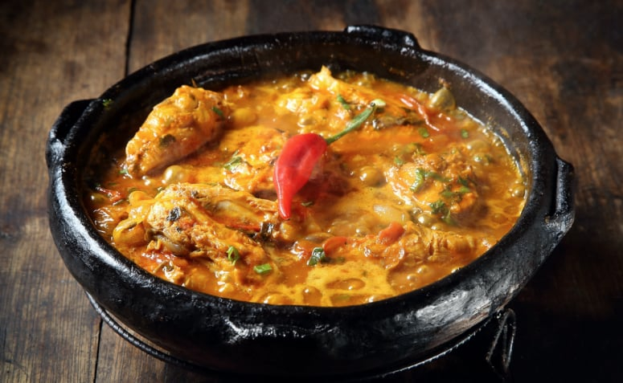

Moqueca Recipe

Description
Moqueca is a brazilian seafood stew that has strong african influence. It is
easy and quick to prepare, which makes it perfect for a weeknight but special
enough to serve to guests.
It is tipically made with white fish, marinated with a simple mix of lime
juice, salt and garlic. The base of the stew is made from tomatoes, bell peppers
and garlic. Coconut milk will give the stew some flavour and creaminess.
Also, it is important to include a bit of red palm oil, which will give it
a vibrant orange colour and the unique flavour that distinguishes this
moqueca from all other fish stews.
Ingredients
-
1kg of fresh white fish, cut into two-finger wide slices.
- juice of 1 lemon
- 2 mid-sized onions, cut into circular slices
- 2 bell peppers (one red, and one green), cut into circular slices
- 1 clove of garlic, squeezed
- 4 ripe of tomatoes, chopped, optionally skinned
- 4 cilantro stems with leaves, finely chopped
-
12 tbsp of Azeite de dendê (a very tasty, heavy, red palm oil,
which may not be ommited for moqueca)
- 200ml coconut milk
- salt and pepper
Steps
-
Leave the fish in a marinade made out of lemon juice and fine powdered
pepper for at least 1hr.
-
Put the fish, onions, bell peppers, garlic, tomatoes, and the cilantro in
numerous layers into a pot.
-
Pour the azeite de dendê and the coconut milk over all and let boil
everything for 20min. From time to time, ladle/scoop the liquid from
the pot's bottom to its top. Be careful, in order not to break the fish!
-
Serve with white rice.